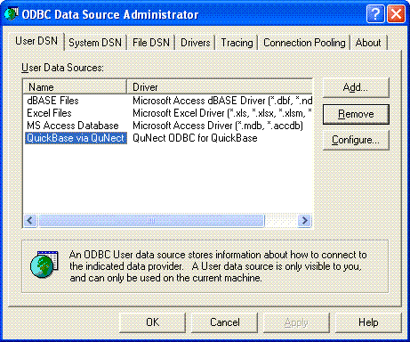

Application Note for QuNect ODBC for QuickBase
Minimizing API calls with QuNect ODBC for QuickBase
Use the DOQUERYCHUNKSIZE
connection string parameter to increase the number of records returned
per API_DoQuery API call from the default value of 1,000.
If you set this value too high then you QuickBase will respond with error number 75, "View too large".
Then QuNect ODBC for QuickBase will try again asking for half the number
of records. This will be repeated until Quickbase stops responding with error 75.
This retry process will actually increase the number of API calls per record retrieved rather than minimizing the number of API calls per record retrieved.
So the records per API_DoQuery call must be set with caution to make sure you don't encounter error 75.
QuNect ODBC for QuickBase API and SQL logging will help you determine if you're encountering error 75's.
You can also use the more convenient "Optional Advanced Features" "API_DoQuery Chunk Size" setting at the bottom the DSN dialog to do the same thing.

Connection Pooling
QuNect ODBC for QuickBase communicates with Quickbase exclusively through the Quickbase HTTP API. On some Quickbase plans there is a monthly limit on the number of API calls that can be made. QuNect ODBC for QuickBase caches table schema information on a ODBC connection basis to minimize API calls. However sometimes the user doesn't have control of when an ODBC connection is dropped. Dropping an ODBC connection means that QuNect ODBC for QuickBase loses its table schema caches. However the Microsoft Windows operating systems support ODBC connection pooling to solve this problem. Go to the ODBC administrator panel. Click on the Start Menu and click on the All Programs then on QuNect ODBC for QuickBase.

Then click on 32 bit ODBC Admin or 64 bit ODBC Admin depending on whether you are using a 32 bit or 64 bit application. If in doubt do both.
You'll end up at the dialog below:

Click on the Connection Pooling tab. You'll see the dialog below:
Double click on QuNect ODBC for QuickBase and select Pool connections to this driver. Enter the number of seconds that you anticipate will lapse between your API calls. Click OK and then OK again.